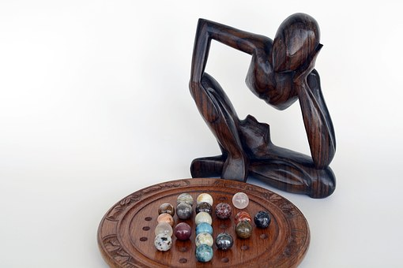
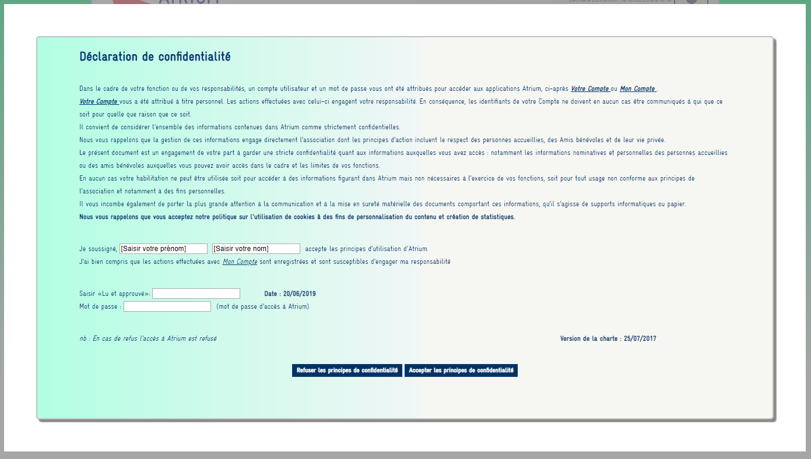
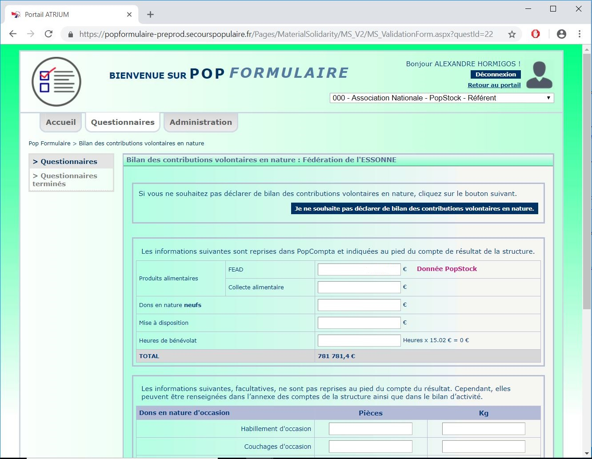
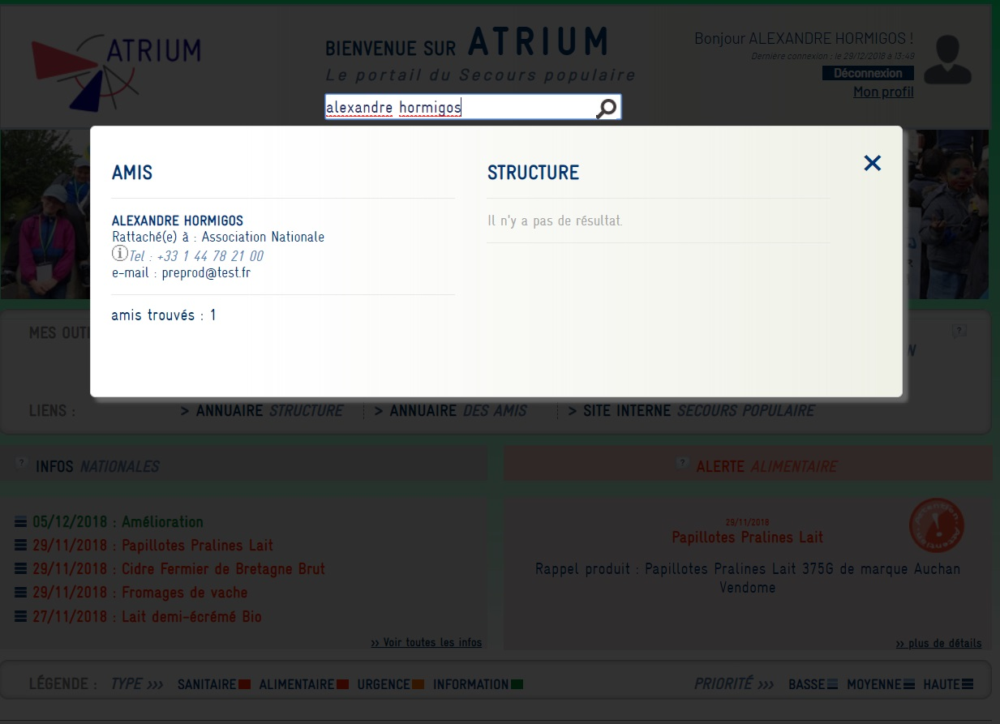
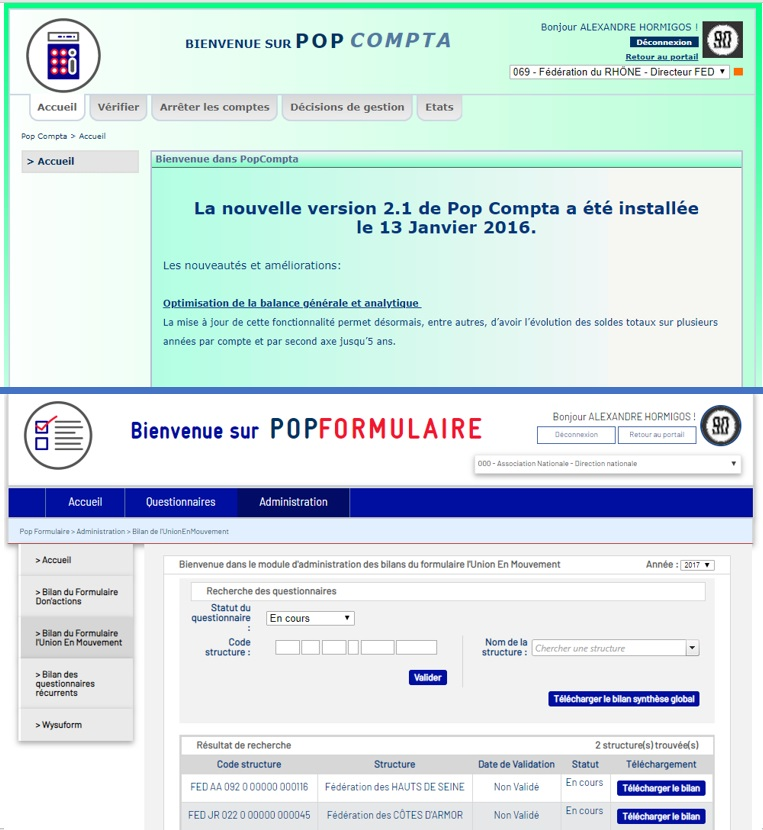

COMPÉTENCES HUMAINES
Ce qui me caractérise professionnellement
done
PERSÉVÉRANCE
info
Sans ce trait de caractère, je n’aurais peut-être pas eu la vie professionnelle que j’ai aujourd’hui.
Je sais toujours, au fond de moi, que lorsque je commence un projet, qu’il soit professionnel ou personnel,
qu’il est atteignable par la volonté et la persévérance.
hourglass_full
PATIENCE
info
Je sais que rien ne se fait sans une bonne dose de patience.
À force de patience et de calme, on parvient toujours à un meilleur résultat que si on se
précipite et on s'impatiente quant à la concrétisation d'un projet, qu'il soit professionnel comme
personnel.
assignment
ORGANISATION
info
Mon organisation et ma rigueur sont souvent mises en avant par mon entourage.
Avant même de commencer à travailler sur un projet, il est nécessaire pour
moi d'organiser et de structurer les différentes étapes du processus de réalisation.
Pour moi, un projet qui commence avec une mauvaise organisation est un projet compromis.
menu_book
PÉDAGOGIE
info
La pédagogie consiste selon moi à être dans un état d'esprit d'ouverture et d'échange.
On se tourne naturellement vers moi lorsque l'on constate que
je comprends quelque chose et que je suis en capacité d'aider.
Selon moi, la pédagogie permet de mettre en confiance son interlocuteur dans beaucoup
de situations et de contextes.
-
Naviguez vers :
-
done
-
hourglass_full
-
assignment
-
menu_book
La générosité dans l'envie

Ma propre définition de la persévérance c'est faire preuve de générosité
dans l'envie et la volonté d'entreprendre dans ses projets professionnels
comme personnels.
Sans ce trait de caractère, j'aurais eu beaucoup plus de difficultés quant
à la réalisation de mon projet de reconversion professionnelle.
Je peux très simplement faire un parallèle concret sur mes débuts dans ma carrière de développeur Web au sein du Secours Populaire.
N’ayant aucune connaissance et aucune expérience dans le domaine de l’informatique, très peu de personnes auraient misées sur
la réussite de ce projet de reconversion.
Plus précisément, on m’a fixé, dès le début, des objectifs très précis et très ambitieux
pour moi à l’époque. Il s’agissait de se connecter et de réussir une requête qui me paraît simple aujourd’hui,
l’affichage d’une information sur une page venant d’une base de données en utilisant ADO pour réaliser un simple formulaire en ASP.Net.
Je suis resté bloqué pendant un long moment sur un problème sans jamais me dire que c’était trop compliqué et que je n’y parviendrais pas.
J’ai fini par résoudre mon problème grâce à la persévérance, sinon on aurait fini peut-être par me montrer,
mais cela n’aurait pas été ma réussite, le fruit de mon propre travail.
Lien avec le projet :
Lien avec la compétence technique :
-
Naviguez vers :
-
done
-
hourglass_full
-
assignment
-
menu_book
"Patience est mère de sûreté"

Être patient, ce n'est pas, selon moi, être passif et subir les évènements.
Bien au contraire, la patience consiste à attendre le bon moment pour agir mais
cela veut surtout dire agir à bon escient et sans excès. Ainsi je pense qu'une personne
impatiente agira toujours avec excès et précipitation lorsqu'elle
commencera à travailler sur un projet car elle recherchera toujours un
résultat immédiat qui ne sera pas forcément à la hauteur de ses espérances.
Cette patience, j'ai dû en faire preuve lorsque j'étais à la recherche de mon
poste de Développeur Web que j'occupe actuellement au sein du Secours Populaire Français.
J'ai dû apprendre à attendre des réponses à des demandes d'emplois que je faisais mais surtout
à ne pas forcément avoir de réponses après de longues heures de recherches et de rédactions de
lettres de motivations.
Si j'avais été impatient, jamais je ne serais parvenu à obtenir le résultat
que j'ai aujourd'hui. Cette patience m'a permis de me remettre en question, de faire évoluer ma démarche
de recherche d'emploi mais surtout à ne pas me précipiter lorsqu'il a fallu faire un choix.
Cette philosophie, je l'applique aujourd'hui dans la plupart des projets professionnels que j'aborde.
Quand je suis confronté à une difficulté, je prends le temps de rechercher et de trouver une solution
qui me paraît être la meilleure possible. Pour beaucoup, cela semble contre-productif mais je pense
que la patience permet de gagner du temps face à la précipitation et l'éparpillement.
Lien avec le projet :
Lien avec la compétence technique :
-
Naviguez vers :
-
done
-
hourglass_full
-
assignment
-
menu_book
S'organiser pour mieux avancer
L'organisation, ce n'est pas forcément être rigide dans ses idées et son mode de fonctionnement.
Beaucoup confondent l'organisation et un esprit obtus qui ne serait pas ouvert à l'évolution et l'évolutivité.
L'organisation permet, selon moi d'anticiper l'évolution d'une demande qui va forcément arriver
à un moment ou un autre.
Cette organisation, j'ai su l'utiliser à bon escient dans le cadre de mon activité professionnelle.
Elle est rassurante pour moi mais aussi et surtout pour celles et ceux qui travaillent avec moi car
ils savent précisément ce que je veux faire et comment.
De plus, elle permet de se prémunir de situations délicates qui peuvent arriver au cours de la vie
d'un projet. Ainsi, au cours d'un projet sur lequel je travaillais, une personne est arrivée précipitamment
à mon bureau. Elle se plaignait du fait qu'une fonctionnalité n'était pas implémentée dans le projet en question.
Pour lui répondre, je me suis appuyé sur le rapport préliminaire sur lequel on avait travaillé ensemble.
Ceci a permis de recentrer la conversation, de calmer les inquiétudes de cette personne mais surtout de
montrer qu'une organisation claire et nette était nécessaire à la concrétisation de ce projet.
L'évolutivité d'un projet est une composante nécessaire à prendre en compte et je l'ai prise en compte,
après discussion avec l'ensemble des personnes concernées. J'ai tout simplement revu mon organisation en
considérant la demande comme une mise à jour d'une étape déjà effectuée dans le projet.
Sans cette organisation, jamais je ne pourrais avancer sereinement dans les projets que j'entreprends car
elle me permet de les aborder plus sereinement. Cette vision est aussi utile lors de la phase de finalisation d'un projet,
car il s'agit du moment où la demande est souvent la plus forte en terme d'évolutions.
Lien avec le projet :
Lien avec la compétence technique :
-
Naviguez vers :
-
done
-
hourglass_full
-
assignment
-
menu_book
La pédagogie comme outil de communication
La pédagogie au delà d'une compétence métier est selon moi essentiellement une compétence humaine.
En effet, on pense plus souvent à une personne ayant un bon esprit pédagogique lorsque l'on dit d'une personne
qu'elle est pédagogue.
Je définirais cet état d'esprit comme une logique d'entrée particulière dans la communication avec une autre personne.
Si dès le début du contact avec cette personne nous ne sommes pas dans cet état d'esprit, les relations avec cette dernière seront
totalement différentes.
Rentrer dans la communication avec un état d'esprit pédagogique, c'est établir un climat de confiance avec son interlocuteur,
qui vous renverra cette confiance si il voit que vous êtes en capacité et surtout avec la volonté de l'aider et de l'accompagner
dans un projet quelqu'y soit.
Cet état d'esprit, j'ai appris à le développer tout au long de mon apprentissage en tant qu'apprenti enseignant dans l'enseignement
du premier degré.
En effet, même si j'avais naturellement une tendance à me tourner vers la pédagogie, j'ai dû renforcer et développer cette capacité
en m'adaptant à un public particulièrement exigeant, les enfants de 3 à 12 ans.
J'ai très vite compris que les enfants fonctionnaient un peu comme un miroir de l'âme. J'entends par miroir de l'âme cette capacité
chez les enfants à ne pas utiliser de "filtres" pour vous exprimer leurs satisfactions, leurs mécontentements, leurs doutes et surtout
à décrire votre attitude, vos défauts et vos qualités de façon très directe.
Une fois ceci assimilé, j'ai compris qu'être bon pédagogue c'est surtout faire preuve d'empathie, c'est à dire comprendre ce que la personne,
ou le public qui est en face de vous attend de vous.
Ce dernier point est le plus important pour moi, peu importe ce que l'on enseigne et l'on apporte à l'autre, l'essentiel, c'est d'établir
ce fameux climat de confiance, dès le début.
Aujourd'hui, ceci me sert essentiellement dans ma façon de communiquer avec les différents interlocuteurs que je peux rencontrer dans mon environnement
professionnel.
J'aborde très souvent une personne avec cet état d'esprit et avec cette idée qu'elle ne sait pas forcément tout ou qu'elle n'est pas au courant de tout.
L'objectif, selon moi, est de faire au maximum pour que l'un et l'autre, nous puissions se faire confiance et que le projet sur lequel on travaille arrive
à son terme.
Lien avec le projet :
Lien avec la compétence technique :
COMPÉTENCES TECHNIQUES
Ce que je sais faire
create
WEB DESIGN
-
- Réalisation de site web responsive
-
- Animation avec la gestion du DOM
-
- Utilisation d'AJAX
-
- Refonte graphique de site web
code
DÉVELOPPEMENT
-
- Utilisation de la technologie ASP.Net (WebForms et MVC) et C#
-
- Programmation orientée objet (POO)
-
- ADO.Net et Entity FrameWork pour la liaison avec la base de données
-
- Utilisation de Reporting Services pour la création de rapports téléchargeables
storage
BASE DE DONNÉES
-
- Utilisation de la technologie MicroSoft SQL Server pour la gestion des bases de données
-
- Rédaction de requêtes simples et imbriquées
-
- Utilisation des procédures stockées
-
- Création de base de données relationnelles
-
- utilisation de la technologie Full Text Search pour la recherche par mot-clé
school
FORMATION
-
- Mise en place d'ateliers-formation et formations dans différents cadres et contextes
-
- Organisation et mise en place des formations (mailings, appels, préparation)
-
- Présentation et organisation de débats lors de ces formations
info
COMPÉTENCES ANNEXES WEB
-
- Java (Swing, JEE, application n-tiers), PHP et Node Js (Notions)
-
- Visual Basic (Utilisation dans la technologie Reporting Services, Réalisation d'un jeu simple)
-
- Angular (Conception d'une mini-application type réseau social)
-
- Babylon Js (Conception d'un mini-jeu 3D en JavaScript)
event_note
GESTION DES PROJETS
-
- Rédactions de rapports préliminaires avant la mise en place d'une nouvelle solution technique
-
- Élaboration d'un calendrier prévisionnel
-
- Organisation de réunions préalables à la phase de développement du projet
-
- Évolution et correction prise en compte lors du cycle de développement du projet
MON PARCOURS
Voici quelques unes de mes expériences professionnelles dans l'ordre antéchronologique
Novembre 2016 - Aujourd'hui (3 ans)
Paris 3 ème arrondissement
Développeur Web en alternance au Secours Populaire Français
1) Conception et développement d’applications web en ASP.Net et C# pour la plateforme web du Secours Populaire Français,
(Atrium),
2) Conception et développement de bases de données pour les applications développées pour la plateforme Atrium (Microsoft SQL Server).
Novembre 2016 - Mars 2018 (16 mois)
Paris 10 ème arrondissement
Formation RNCP de niveau II (Bac +3) de Concepteur-développeur informatique au sein de l’IPI
Apprentissage des notions élementaires en programmation informatique à travers les langages C# et Java,
Apprentissage de la gestion de projets informatiques au travers de modèles de conceptions comme MERISE ou encore UML.
Septembre 2015 - Juillet 2016
(durée : 10 mois)
Ecquevilly (Yvelines - 78920)
Service civique au sein de l’Association au Service de l’Action Humanitaire
1) Administration de deux sites web et de deux applications mobiles : le portail-humanitaire et le salon des solidarités,
2) Conception, mise en place et animation d’ateliers-formation sur des solutions de financements.
Septembre 2013 - Juin 2015 (20 mois)
Gif sur Yvette (Essonne - 91190)
Saint-Aubin (Essonne - 91190)
Vauhallan (Essonne - 91430)
Ministère de l'Éducation Nationale
Professeur des écoles en alternance en classe de CM2, Grande Section, CP/CM1,
Petite Section/ Moyenne Section, dans le département de l’Essonne (91).
Septembre 2013 - Avril 2015 (16 mois)
Université d'Orsay (Essonne - 91940)
Master 2 Métiers de l’Enseignement, de l’Éducation et de la Formation (niveau)
Réalisation d'un mémoire,
Préparation au Concours de Recrutement de Professeur des écoles (CRPE)
Mai 2009 - Juin 2009 (10 mois)
Saclay (Essonne - 91190)
CEA de Saclay
Rédaction d'un rapport sur l'organisation de production du dopage par transmutation
nucléaire de lingots de silicium,
Fiabilisation et optimisation d'un mécanisme d'ouverture de barillet de flux de neutrons
Septembre 2008 - Juin 2010 (20 mois)
Lycée parc de vilgénis de Massy (Essonne - 91300)
BTS Assistance Technique d'Ingénieur (ATI)
Étude de systèmes mécaniques, de systèmes automatisés, de circuits électroniques complexes,
Réalisation d'un rapport de projet et d'un rapport de stage dans le cadre du BTS.
Septembre 2006 - Juin 2008 (33 mois)
Lycée de l'Essouriau des Ulis (Essonne - 91940)
Bac Sciences et Techniques Industrielles option productique
Usinage de pièces mécaniques, Contrôle de qualité à travers des instruments de mesures spécifiques,
Réalisation de dessins industriels, études d'ensembles mécaniques, de systèmes automatisés.
À PROPOS DE MOI !
Pour un peu mieux me connaître !
Aujourd’hui développeur Web au sein du Secours Populaire Français, je fais face à un nouveau défi professionnel
qui m’a déjà apporté et qui continue à beaucoup m’apporter en tant que professionnel mais aussi en tant que jeune actif
depuis maintenant plus de 3 ans.
Que ce soit au Commissariat à l’Énergie Atomique ou encore dans les écoles en tant qu’apprenti professeur des écoles
mes expériences passées m’ont amené à mûrir en tant que personne.
Étant curieux, la vie est pour moi une succession de découvertes et de situations nouvelles et intrigantes.
Histoire, sports automobiles, astronomie, technologie, la liste de mes centres d’intérêt seraient bien trop longue à faire.
Alors n’hésitez pas, si vous voulez en savoir encore un peu plus sur moi, vous pouvez continuer de visiter mon portfolio.
WEB DESIGN
Lien avec le projet :
Lien avec la compétence humaine :
Présentation :
Selon moi, le web design consiste à utiliser des compétences techniques propres au web (HTML et CSS) pour concevoir et
réaliser une réalisation graphique précise.
J'ai ainsi pu, dans le cadre de mon métier avoir l'occasion de mettre à jour graphiquement une application web complète,
le portail intranet du Secours Populaire, Atrium.
Web design et autodidactisme :
J'ai choisi de développer en premier cette compétence technique car c'est par cette entrée que j'ai commencé à développer et
à écrire du code dans le domaine du Web.
En effet, j'ai eu l'occasion au cours de mon année de licence dans l'enseignement en 2012 de développer un site web alors que
je n'avais aucunes connaissances dans ce domaine, pour moi le code source d'une page ne voulait absolument rien dire.
Progressivement, je me suis laissé entraîner par ce que j'apprenais au fur et à mesure et j'en suis arrivé à développer, à partir de
zéro, "from scratch" comme le dirait certains, un site web que j'ai par la suite publié via un hébergeur que j'avais à disposition
et gratuit (l'hébergeur d'orange pour le coup).
Ainsi, j'ai pu mettre à disposition ces connaissances que j'avais acquises plus tard lorsque j'ai commencé mon projet de reconversion.
Lors de mon expérience au sein du Secours Populaire Français, j'ai pris beaucoup de plaisir à réutiliser ces compétences que je n'avais
pas perdues avec le temps, bien au contraire.
J'ai aussi pu, lors de ma première formation au sein de l'IPI, réaliser des reproductions de maquettes de sites web, travail qui était demandé
au cours du module. Je me rends compte que lorsque je commence à rentrer dans le code HTML et le CSS, j'ai du mal à en décrocher !
Progression possible :
J'ai actuellement une bonne connaissance de la plupart des règles qui peuvent exister en CSS. Néanmoins, je n'ai jamais encore eu la
possibilité d'utiliser des frameworks de pré-processing type SASS ou encore Compass. Je serais particulièrement interessé de comprendre
comment fonctionnent certaines nouvelles possibilités offertes par le SCSS comme les "mixins" ou encore la possibilité de réaliser des boucles
avec du CSS ce qui le transforme en vrai langage de programmation.
DÉVELOPPEMENT
Lien avec le projet :
Lien avec la compétence humaine :
Présentation :
La programmation, avant que je commence mon projet de reconversion professionnelle, ne m'était pas totalement étrangère.
En effet, j'ai eu la possibilité, dès mes années de lycée, de réaliser des programmes sur une machine à commande numérique
qui utilisait un langage qui lui était propre et qui obéit à une norme ISO.
J'ai ensuite été de nouveau confronté à une problématique de programmation au cours de mon année d'étude en licence professionnelle
de robotique. En effet, au cours d'un exercice, je devais utiliser un langage, le Visual Basic, le même que l'on utilise pour
réaliser des macros Excel mais pour dans ce cadre réaliser un petit jeu que j'ai par la suite batpisé le "fructos game".
Le développement, un projet de reconversion professionnelle :
Cette problématique du développement ou du "coding" s'est reposée pour moi au cours de mon année de service civique.
En effet, au delà de mon activité d'organisateur et d'animateur de sessions d'informations à destination de responsables d'associations,
je réalisais d'autres tâches au sein de l'association pour laquelle je travallais.
Je devais, utiliser du code HTML et du code CSS pour publier, quotidiennement, des actualités qui alimentaient un site, le portail-humanitaire.
J'ai ainsi été rattrapé par le développement et c'est à ce moment que l'idée d'une reconversion professionnelle s'est renforcée et est devenue
sérieuse.
Le développement, un projet qui s'est concrétisé :
Près de trois années après, j'en suis à utiliser quasi quotidiennement un langage de programmation complexe, le langage C# au travers de
son framework web, le .Net que ce soit en version standard ou encore sa version open source, le .Net Core.
J'ai eu l'occasion, par le biais des projets que l'on m'a confiés, d'utiliser du WebForm, du .Net MVC, du .Net Core MVC ou encore réaliser
des projets de mises en place d'API assez récemment en 2019.
Je pense actuellement avoir un niveau de connaissances me permettant d'être de plus en plus indépendant sur le travail que je réalise.
Néanmoins, pour moi, être indépendant ne veut pas dire travailler seul dans son coin, je sais que lorsque j'ai une difficulté que je
ne peux pas résoudre seul, un avis extérieur et expérimenté, celui de mon responsable actuel, à l'heure où j'écris l'article en 2019 me
permettra de ne pas tourner desespéremment en rond.
Le développement, suite et avenir :
Lorsque l'on développe, c'est un peu comme pour les chercheurs dans les sciences fondamentales et expérimentales. Plus on en sait, moins on
en sait. En effet, plus on découvre de nouveaux concepts, de nouvelles manières de faire et plus on se pose de questions sur la manière dont
nous codons, dont nous développons quelque chose de concret. Je pense que ma marge de progression est encore relativement importante et j'aimerais,
pourquoi pas à terme expérimenter mes compétences et connaissances actuelles dans d'autres environnements. J'ai par exemple quasiment aucunes
notions dans le domaine de l'informatique avancée (l'IA) que l'on appelle plus communément l'intelligence artificielle.
C'est la raison pour laquelle je ne me considèrerais jamais comme un expert de telle ou telle technologies même si pour certaines personnes,
de leur point de vue je peux être spécialisé dans ces technologies.
BASE DE DONNÉES
Liens avec les projets :
Liens avec la compétence humaine :
Présentation :
Lorsque l'on commence à travailler sur des projets web qui touchent les utilisateurs et qui deviennent des sites web dynamiques, on doit forcément
commencer à stocker des informations, à stocker de la donnée. Les bases de données permettent aux développeurs de mettre à disposition
des utilisateurs des informations qui seront présentées directement sur une vue ou dans un document de reporting du type powerpoint ou
encore Excel.
La gestion des bases de données, j'y suis confronté très régulièrement lorsque je commence à travailler sur un projet. En effet, la
plupart des projets tournent autour de la conception d'un système de base de données. C'est le plus souvent la première étape d'un projet,
concevoir le modèle de base de données. Il s'agit le plus souvent d'ajouter une table mais je peux de temps en temps devoir réaliser
des modèles plus complexes avec plusieurs tables qui interagissent ensemble.
Base de données et MicroSoft SQL :
Actuellement, j'utilise principalement la technologie de gestion de base de données en SQL de MicroSoft, MicroSoft SQL Serveur dans sa version
2014. Cette technologie SQL ajoute quelques fonctionnalités comme les "Common Table Expression" ou encore CTE qui permettent de stocker
une information issue d'un ensemble de tables dans une expression réutilisable une seule et unique fois dans l'expression suivante. Ceci dans
le but d'éviter la création de plusieurs niveaux de sous-requêtes illisibles pour la plupart des développeurs.
En effet, les requêtes en SQL peuvent rapidement devenir illisibles car elles ne permettent pas comme en C# de réutiliser certaines parties
du code de manières très confortables. Il faut dans ce cas créer des fonctions, des vues pour la réutilisation. J'ai déjà été confronté, plusieurs
fois, à des requêtes très complexes à lire, notamment dans le cadre d'une procédure stockée soit un ensemble de requêtes stockées dans un fichier
unique et qui s'éxecute à son appel. Il s'agissait de calculer plusieurs indicateurs à plusieurs échelles, locales, départementales, régionales
et enfin nationales. Les calculs n'étaients pas complexes à proprement parler, il s'agissait le plus souvent de moyennes. Le plus complexe était
de les transposer à différentes échelles et ce en utilisant uniquement du SQL.
J'ai ainsi pu dans ce cas concret utilisé quasiment toutes les notions et techniques de SQL, les CTE, la mise en place de curseurs qui permettent
de réaliser de manière répétée une requête SQL, utilisée régulièrement dans le cadre d'organisation hiérarchique de l'information. Mais aussi les
tables temporaires, la correction d'une procédure stockée complexe, son exécution, etc...
La base de données, suite et avenir :
Je pense avoir un niveau de compétences moins développé que dans le cadre du développement. Néanmoins, je suis de plus en plus indépendant dans la
création de requêtes de plus en plus complexes et j'ai des connaissances sur le sujet qui sortent du cadre plus "classique", notamment dans
la gestion de la sécurité avec les notions de "GRANT" ou encore d'utilisateurs spécifiques d'une base de données SQL. Pour ce qui est de l'avenir,
j'imagine qu'avec l'apparition et le développement, de plus en plus importants, de la "big data", les base de données en SQL ne seront plus les seules
maîtres à bord de la gestion des données. On entend de plus en plus parler de concepts de "Data Warehouse" ou encore de "Data Lake" qui regroupent
un ensemble de données différentes, fichiers plats, données structurées et non structurées. Un peu comme dans le cadre du développement, je serais
interessé à comprendre un peu plus la manipulation de ces grands ensembles de données afin de savoir pourquoi on les utilisent et qu'en fait-on
par la suite.
COMPÉTENCES ANNEXES WEB
Lien avec le projet :
Lien avec la compétence humaine :
Présentation :
J'ai voulu regrouper dans cette catégorie toutes les autres compétences que j'ai acquises dans un cadre plus académique.
Avant ma formation en alternance j'ai pu réaliser un jeu en Visual Basic, le fructos game. Aujourd'hui je sais que le langage utilisé n'était pas
forcément le plus adapté pour ce genre de projet.
Par la suite, j'ai eu l'occasion, au cours de mes 3 années de formation en alternance, de découvrir de nouvelles technologies que je n'utilisais pas comme
Java Spring, React Native, le Visual Basic mais aussi Angular.
Ce que cela m'apporte dans le contexte professionnel :
Utiliser des technologies différentes m'a permis de progressivement démystifier certains langages, certains frameworks qui me paraissaient inaccessibles avant.
Par exemple pour React, j'ai finalement compris que l'on réutilisait les concepts de l'orienté objet via la création et la gestion de composants
qui permettent de paramétrer une vue notamment sur une application mobile avec la version React Native.
J'ai ainsi progressivement compris que le développement informatique n'est pas forcément qu'une histoire de langage. C'est principalement l'histoire
de concepts plus fondamentaux et abstraits comme le choix d'un typage fort ou d'un typage faible ou encore du choix de la compilation ou de l'interprétation.
Aujourd'hui, je suis plus en capacité d'apprendre un nouveau langage ou encore un nouveau framework. Néanmoins, je pense que je n'ai pas encore eu assez
d'expériences dans un cadre plus professionnel pour me considérer capable d'aborder un projet avec les langages et frameworks que j'ai énoncé précédemment
de façon suffisamment sereine. Je vais devoir davantage m'arrêter sur les concepts et subtilités et du coup je développerai forcément beaucoup moins
rapidement ce projet.
Suite et avenir :
Aborder ces nouvelles technologies m'a donné l'envie d'éventuellement apprendre à utiliser d'autres langagages comme le python. Je n'ai aucune notion
quant à la syntaxe de ce langage et j'ai compris que pour chaque domaine, un langage pouvait être plus adapté qu'un autre. Par exemple si on travaille
dans la "big data" et l'Informatique Avancée ou encore l'IA, le python est un langage plus adapté de par sa syntaxe qui est plus simple et plus "fluide"
que d'autres langages plus "verbeux" comme le C# notamment.

GESTION DES PROJETS
Liens avec les projets :
Liens avec la compétence humaine :
Présentation :
La gestion des projets consiste à trouver une méthodologie quant au suivi et à l'évolution de l'avancée du travail sur un projet.
Cela ne consiste pas qu'à organiser le projet mais aussi à synthétiser et à produire des traces écrites des différents points réalisés
avec son interlocuteur.
Cette gestion des projets, que ce soit des projets pédagogiques ou encore académiques, j'ai pu l'utiliser dans un cadre professionnel et ce
de façon récurrente.
Gestion des projets pédagogiques :
Avoir une idée de sessions d'enseignement, d'ateliers, trouver les compétences dans les programmes académiques et les mettre en relation avec les
objectifs pédagogiques d'une séance, organiser ces séances en séquences d'enseignement, mettre en place une progressivité des savoirs et compétences
académiques que doivent acquérir les élèves. Tout cela, j'ai dû l'apprendre, en enseignement théorique à l'université et le plus souvent de façon
plus ou moins empirique en situation concrète face à des élèves de 3 à 12 ans. J'ai acquis au cours de cette période une méthodologie de travail
que j'utilise encore aujourd'hui.
Gestion des projets dans le contexte professionnel actuel :
Ainsi, dès que je commence un nouveau projet technique, j'essaie de comprendre quel est son objectif final, à quoi je dois arriver à terme.
En effet, contrairement à beaucoup de développeurs, la plupart des projets sur lesquels je travaille disposent soit d'aucunes spécifications techniques
soit de spécifications techniques très légères. Je dois ainsi déterminer le périmètre d'action, définir moi-même les spécifications techniques et
les rédiger dans un rapport. On me demande même quelques fois d'établir un planning prévisionnel de livraison du projet voire d'organiser des réunions
directement avec l'utilisateur final.
Je suis ainsi sorti du cadre strictement technique du développeur web, je dois aussi être en capacité de demander puis de présenter le travail réalisé
à l'utilisateur final.
Plus concrètement, j'ai eu l'occasion de développer cette compétence dans le cadre de la mise à jour graphique du site. En effet, j'ai dû présenter,
au travers de maquettes et d'explications dans des rapports, ce qui avait déjà été fait au graphiste travaillant au sein du Secours Populaire Français.
J'ai aussi dû, dans le cadre de la mise en place d'un mini-framework pour l'application Pop-Formulaire me mettre en relation avec les différents
interlocuteurs qui seraient concernés par ce projet, notamment des personnes qui n'avaient, à la base, aucun lien avec la Direction des Systèmes
Informatiques et qui s'appuyaient, dans certains cas, sur le travail réalisé par des bénévoles qui n'étaient plus forcément présents, ce qui complexifiait
mon travail de communication que j'ai malgré tout mener à bien.
Suite et avenir :
Concernant la gestion de projet, je vois en cette compétence un outil de méthodologie plus qu'une envie d'évolution. J'ai pu aborder les différents grands
types d'organisation du projet, cycle en "V", agile, Scrum, Prince, Merise, etc... sans toutefois avoir eu concrètement l'occasion de m'y confronter.
J'aimerais concrètement comprendre l'intérêt de ces différentes organisations de gestion des projets et surtout voir directement le gain qu'on
peut en tirer.

MISE EN PLACE DE LA CHARTE DE CONFIDENTIALITÉ D'ATRIUM
Liens avec les compétences techniques :
Lien avec la compétence humaine :
Présentation :
Dans le cadre de mon contrat en alternance au sein du Secours Populaire Français,
j’ai dû mettre en place une charte de confidentialité pour l’ensemble de l’application
Atrium. Cette charte n'était à la base visible que dans l’une des applications d’Atrium,
Pop Accueil. L’objectif ici étant de faire en sorte que l’ensemble des utilisateurs
d’Atrium signent la charte de confidentialité
et ce dans le cadre de la nouvelle réglementation
pour la protection des données qui devaient être mises en place avant mai 2018.
Ma contribution :
J’ai dû développer et mettre en place la charte de confidentialité en respectant plusieurs étapes.
La première étape consistait à faire évoluer, très simplement le modèle de données afin de pouvoir utiliser plusieurs versions de la charte.
La charte s'affiche ensuite en utilisant un modèle directement importé de la base de données.
Il a fallu par la suite mettre à jour le système d’accès aux données de la solution Atrium.
Comme la charte était déjà implémentée au début de la solution Atrium, soit au début des années 2010,
il fallait que je modifie une partie traitant de l’accès aux données de la charte dans un système complexe
qui simule le comportement d’un ORM (Object Relation Mapping) plus moderne comme Entity Framework.
La prochaine étape consistait à mettre en place un petit générateur de Template « maison »
qui consistait simplement à récupérer les informations issues de la base de données et de remplacer les parties entre crochets par les contrôles voulus,
soit des zones de texte à remplir avec des validateurs des valeurs rentrées dans ces zones. Pour cela, le JavaScript est utilisé
pour le placement des contrôles côté client et la technologie ASP.Net WebForm est utilisée pour le traitement de ces contrôles et
pour aussi notamment la validation des valeurs rentrées dans ces derniers.
La dernière étape consistait à réaliser le même processus au niveau de l’outil utilisé pour générer les rapports
soit le reporting services de Microsoft SQL.
Ce système permet ainsi de faire évoluer le contenu de la charte et ce de façon dynamique, en plaçant le contenu HTML directement dans une colonne de la table
permettant d’accéder aux données de la charte de confidentialité.
Aujourd’hui, cette charte est signée une fois par an par l’ensemble des utilisateurs d’Atrium et deux versions se sont succédées l’une à l’autre.

MISE EN PLACE D'UN MINI-FRAMEWORK POUR POP-FORMULAIRE
Liens avec les compétences techniques :
Liens avec la compétence humaine :
Présentation :
Dans le cadre de mon contrat en alternance au sein du Secours Populaire Français,
j’ai dû mettre en place un mini-Framework pour une des applications d’Atrium, Pop Formulaire.
Cette application permet de répondre à des questionnaires créés spécifiquement pour un bilan d’évènements par exemple.
L’idée était de créer un environnement permettant la création générique de ce type de formulaire au sein d’Atrium.
En effet, lorsqu’un formulaire est créé dans cette application, un modèle spécifique de base de données est créé.
L’objectif ici est de centraliser les données dans un modèle générique dans la base de données afin d’accélérer et de faciliter
le développement de ce type de formulaire.
Ma contribution
Il s’agissait ici avant tout de connaître les besoins des personnes qui travaillaient en interne au sein du Secours Populaire Français.
Ainsi, j’ai eu l’occasion de réaliser des points et des rendez-vous avec certaines personnes qui organisaient des évènements et
qui étaient habituellement en charge d’exploiter les informations de ces bilans publiés sur Pop Formulaire.
J’ai pu constater que même si un outil d’édition de formulaire existait, Wysuform, peu de personnes l’utilisaient de par sa complexité
et les informations obtenues sont difficilement exploitables (Document CSV) pour une personne initiée.
D’un point de vue technique, plusieurs étapes étaient nécessaires quant à sa concrétisation.
La première consistait à créer un modèle unique de données pour ce type de formulaire.
Cela nécessitait un travail préalable de conception (mise en place d’un modèle conceptuel de données ou MCD) puis de créer les scripts
de création du modèle dans la base de données via la technologie Microsoft SQL.
La 2ème étape consistait à réorganiser le code de l’application en factorisant ce dernier pour la génération des formulaires,
de la partie administration en utilisant la technologie Asp.Net WebForm.
L'objectif était aussi de créer un modèle générique de rapports via la technologie SQL Server Reporting Services.
La dernière étape consistait à automatiser le système de gestion de droit d’accès pour la partie vue du formulaire.
L’information de la vue était pilotée suivant l’organisation de l’information côté Base de données et non le contraire.
C’est ainsi une conception hybride entre le spécifique et l’éditeur pur de questionnaires.
Ce système est aujourd’hui mis en place sur Atrium.
De plus, sa conception permet de le faire évoluer en lui apportant la génération de nouveaux contrôles par exemple.

CRÉATION D'UNE BARRE DE RECHERCHE DYNAMIQUE
Liens avec les compétences techniques :
Liens avec la compétence humaine :
Présentation :
Dans le cadre de mon contrat en alternance au sein du Secours Populaire Français,
on m’a demandé de créer une barre de recherche dynamique
pour la page d’accueil du site métier du Secours Populaire, Atrium.
L’idée était de créer une barre de recherche permettant de trouver directement une structure ou un ami avec une mise à jour automatique
à chaque lettre tapée et entrée dans la barre de recherche par l’utilisateur.
Cette barre de recherche devait permettre d’afficher la structure de rattachement de l’ami
mais aussi le numéro de téléphone et l’adresse e-mail « public » de celui-ci. Un ami est un bénévole,
un bénéficiaire ou encore un salarié de l’association.
Ma contribution
L’idée principale était d’utiliser une technologie mise en place spécifiquement par Microsoft pour son moteur SQL,
la technologie de recherche « Full Text Search».
Cette technologie permet de rechercher dynamiquement le groupe de lettres tapées dans une requête et qui sont contenues dans un mot.
Cela reprend en partie les idées de la technologie
« Elastic Search »
mais pour les bases de données en Microsoft SQL.
Il s’agit ici du côté base de données mais il fallait aussi exploiter ce que retournait la requête en « Full Text » et ce de façon dynamique.
Pour cela, il a fallu avec la technologie utilisée, Asp.Net WebForm, créer un « WebService » spécifiquement pour la page d’accueil.
Ce système permet de récupérer le résultat de la recherche mais aussi de traiter la donnée et l’affichage
suivant le type de retour de la recherche « FullText ».
Une fois ceci mis en place, il a fallu créer l’interface de la barre de recherche à proprement parler.
Ainsi, un Framework, « Telerik » a été utilisé pendant ce projet.
Ce Framework permet d’utiliser des contrôles pour générer des tableaux, des modèles d’interfaces particuliers et différents de ceux déjà existants
dans le Framework de base.
Enfin, pour que cela se génère dynamiquement à chaque frappe de l’utilisateur, il a fallu utiliser AJAX en JavaScript qui est un ensemble de technologies
permettant de gérer dynamiquement le résultat d’une requête effectuée via un évènement, comme l’appui sur la touche d’un clavier par exemple.
Aujourd’hui, la barre de recherche est bien présente sur Atrium et elle est utilisée de plus en plus régulièrement par ses utilisateurs.

REFONTE GRAPHIQUE D'ATRIUM
Liens avec les compétences techniques :
Liens avec la compétence humaine :
Présentation :
Dans le cadre de mon contrat en alternance au sein du Secours Populaire Français,
j’ai été sollicité pour moderniser le design graphique du site Atrium.
L’idée était de se baser sur la mise à jour de l’une des applications du site permettant de gérer les amis sur Atrium, Pop Ami.
La mise à jour étant aussi graphique, il fallait que la partie plus ancienne de l’application soit le plus proche possible
de ce qui avait été fait graphiquement sur cette partie
mais aussi que la mise à jour graphique soit le plus en conformité possible avec la charte graphique du Secours Populaire Français.
Ma contribution
Il s’agit d’une contribution un peu particulière pour moi.
En effet, pour la première fois, j’apportais directement une compétence que j’avais développée avant de rentrer au Secours Populaire Français.
En effet, j’ai commencé à utiliser le HTML et le CSS en autodidacte lorsque je n’étais pas encore développeur Web en alternance.
Il s’agit ainsi pour moi d’utiliser ces compétences et de les mettre à contribution dans un cadre pratique et surtout professionnel.
Il s’agissait aussi d’une première pour moi car je travaillais sur un site de taille plus importante qu’habituellement.
J’ai pris un certain plaisir à réaliser cette tâche car le HTML et le CSS sont pour moi un système permettant d’agencer graphiquement
un site comme un assemblage de briques Lego.
Néanmoins, la principale difficulté consistait à mettre à jour le site tout en limitant au maximum les régressions graphiques comme
une barre qui bave ou encore un tableau mal agencé.
J’ai ainsi utilisé le CSS déjà existant pour ensuite seulement mettre à jour certaines règles graphiques dans un maximum de classes CSS déjà existantes.
Ce projet a été un travail de compromis continu car je voulais mettre en place certaines choses qui n’étaient pas forcément compatibles
avec les contraintes imposées.
J’ai ainsi dû optimiser ce qui avait déjà été fait via des réunions et des retours effectués par l’ensemble de l’équipe de la DSI
mais aussi par le graphiste du Secours Populaire Français qui suit de près l’ensemble des évolutions graphiques des sites web de l'association.
Aujourd’hui, cette mise à jour est visible de tous et l’impact qu’elle a eue sur l’ensemble des utilisateurs d’Atrium est direct.
La mise à jour a permis de moderniser l’application graphiquement.

CRÉATION D'UN MINI JEU EN VISUAL BASIC : LE FRUCTOS GAME
Liens avec les compétences techniques :
Liens avec la compétence humaine :
Présentation :
Dans le cadre de mon année de licence robotique en 2011, on m’a proposé un exercice à réaliser en
WinForm avec le langage Visual Basic,
souvent utilisé pour la création de Macro sur Excel.
L’idée était d’utiliser les contrôles WinForm déjà existants dans l’éditeur proposé pour réaliser un petit jeu. Il s’agissait de cliquer
sur des fruits qui défilaient sur un écran de manière aléatoire tout en évitant de cliquer sur une bombe et ce sur un temps imparti.
Pourquoi j’ai envie de parler de ce projet ? :
Ce petit exercice, je n’ai pas eu l’opportunité de le terminer en cours à l’époque car il s’agissait pour moi de la première fois que je voyais ce genre de code.
De plus, le professeur de l’époque n’a pas particulièrement pris le temps de l’expliquer et l’a corrigé très rapidement.
Il s’agissait, apparemment pour lui d’un exercice très simple.
Cet exercice, je l’ai laissé de côté puis je l’ai oublié pendant plusieurs mois.
Et puis, lors de mon année de licence dans l’enseignement en 2012, on m’a demandé de réaliser une présentation sur un sujet
qui pouvait avoir un lien avec les mathématiques.
Ainsi, j'avais pris la décision de réaliser une présentation sur l’informatique et les mathématiques.
C’est à partir de ce moment précis que cet exercice est devenu un projet personnel.
En effet, je ne me voyais pas présenter quelque chose sur l’informatique sans montrer une application, même la plus basique.
J’ai ainsi repris l’exercice et je me suis pris au jeu, si on peut le dire ainsi, de finaliser ce qui avait été commencé lors
de celui-ci en licence de robotique.
Il s’agissait pour moi tout simplement de ma première réelle expérience de programmation.
J’ai finalement réussi à mettre au point un petit jeu suffisamment fonctionnel pour qu’il soit présentable à mon auditoire lors de cette présentation
sur l’informatique et les mathématiques.
Il ne correspondait qu’à une partie de cette présentation mais c’était la plus importante car elle correspondait à la dernière partie de celle-ci.
Ainsi, j’ai dû reprendre le code que j’avais réalisé afin de le rendre « lisible », le vulgariser aux yeux d’un public moins initié.
Pour vulgariser le sujet qui restait très technique pour ce public, j’ai tout simplement expliqué ce que faisaient chaque blocs de codes
de mon application sans trop rentrer dans les détails. Il s’agissait d’intéresser sans faire peur, de simplifier quelque chose de très technique.
Cela a été une expérience très enrichissante pour moi et elle n’est pas inconnue à mon intérêt pour la programmation aujourd’hui.
 Linked In
Linked In